XRD
The XRD class is the base class for 1D X-ray diffraction simulations. Besides the 1D structure it holds various simulation parameters and provides several general helper functions.
Copyright (c) 2013, Daniel Schick, André Bojahr, Marc Herzog, Roman Shayduk, Clemens von Korff Schmising All rights reserved.
License: BSD (use/copy/change/redistribute on own risk, mention the authors)
Contents
Classdef
Each XRD instance and all inherited class objects follow handle semantics. Hence a copy of such object will not copy the object itself, but only a handle to that object.
classdef XRD < simulation
Properties
properties (SetAccess=public,GetAccess=public)
E % FLOAT energy [J]
qz % VECTOR FLOATs qz range [m^-1]
theta % VECTOR FLOATs theta range [rad]
lambda % FLOAT wavelength of X-rays [m]
k % FLOAT wavenumber of X-rays [m^-1]
pol % FLOAT polarization - pol == 0 : s-polarized; pol == 1 : p-polarized, pol == 0.5 : unpolarized
end%properties
Methods
methods
Constructor
Is executed each time an instance of this class is created. Only the structure input is obligatory. Automatically, the X-ray wavelength 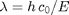 and the X-ray wavevector 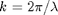 are calculated.
function obj = XRD(structure,forceRecalc,varargin) obj = obj@simulation(structure,forceRecalc,varargin{3:end}); % initialize input parser and define defaults and validators p = inputParser; p.KeepUnmatched = true; p.addOptional('E' , 8047*units.eV , @isnumeric); p.addOptional('pol' , 0.5 , @(x)(isnumeric(x) && x >= 0 && x <= 1)); % parse the input p.parse(varargin{:}); % assign parser results to object properties obj.E = p.Results.E; obj.pol = p.Results.pol; % automatically set the wavelength and k-vector for the % simulations obj.lambda = (constants.h*constants.c_0) / p.Results.E; % probe wavelength [m] obj.k = 2*pi/ obj.lambda; % probe wavenumber [m^-1] end%functions
Display
This method is called to display informations of the instance.
function disp(obj) disp(['X-ray engery [eV] : ' num2str(obj.E/units.eV)]); disp(['X-ray wavelength [Ang]: ' num2str(obj.lambda/units.ang)]); disp(['polarization : ' num2str(obj.pol) ' (pol == 0 : s-polarized; pol == 1 : p-polarized, pol == 0.5 : unpolarized)']); % call the parent display method disp@simulation(obj); end%function
setQz
Sets the 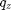-range of the simulation directly and automatically caluclates the corresponding 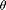-range:
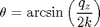
function setQz(obj,qz) obj.qz = qz; obj.theta = asin(obj.qz / (2*obj.k)); end%functions
setQzByTheta
Sets the -range of the simulation directly and automatically caluclates the corresponding -range:
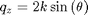
function setQzByTheta(obj,theta) obj.theta = theta; obj.qz = 2*obj.k*sin(theta); end%functions
getPolarizationFactor
Returns the polarization factor 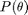 for a given incident angle for the case of s-polarization (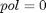), or p-polarization (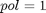), or unpolarized X-rays ( ):
):
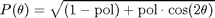
function P = getPolarizationFactor(obj) P = sqrt((1-obj.pol) + obj.pol*cos(2*obj.theta).^2); end%function
convWithTemporalResolution
Convolutes the reflectivity 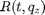 with a temporal resolution function, given by a Gaussian of the FWHM for the time vector 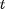. must have the same length as the 1st dimension of . The time resolution funtion has to be centered around 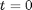.
function [Rc tc] = convWithTemporalResolution(obj,R,t,FWHM) % define the Gaussian in time handle = @(t)(gauss(t,FWHM,'widthType', 'FWHM', 'normalize', true)); % convolute R [Rc tc] = obj.convWithFunction(R',t,handle); Rc = Rc'; end%function
convWithInstrumentFunction
Convolutes the reflectivity with an instrument function, given by a function handle for arguments . must have the same length as the 2nd dimension of . The instrument funtion has to be centered around 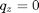 and can be replaced by .
function [Rc qzc] = convWithInstrumentFunction(obj,R,qz,handle) [Rc qzc] = obj.convWithFunction(R,qz,handle); end%function
end%methods methods (Static = true)
convWithFunction
Convolutes the matrix 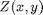 with a function given by the handle on the argument vector 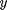. The length of must be the same as the second dimension of  .
.
function [Zc yc] = convWithFunction(Z,y,handle) % interpolate y on a linear grid dy = min(diff(y)); if dy <= 0 error('The argument vector is not sequenced in strict monotonic order.'); end ylin = min(y):dy:max(y); % center of argument x yc = (max(ylin)-min(ylin))/2 + min(ylin); % extend the argument to avoid edge effects y_conv = (2*min(ylin)-max(ylin):dy:2*max(ylin)-min(ylin)) - yc; % calculate the values of the convolution function (normalized) conv_values = handle(y_conv)/sum(handle(y_conv)); Zc = zeros(size(Z)); % convolute for each x of Z for i=1:size(Z,1) % interpolate Z on a linear grid Zlin = interp1(y,Z(i,:),ylin); % convolute temp = conv(Zlin,conv_values,'same'); % interpolate back on original grid Zc(i,:) = interp1(ylin,temp,y); end%for % finaly remove NaN entries due to the interpolation Zc(isnan(Zc)) = 0; end%function
end%methods
end%classdef